Contents
Fully arborescent site : home linking every where : no siloing
warning('OFF');
U={'home','meta_liste_produit1','meta_liste_produit2','liste_produit1','liste_produit2','liste_produit3','liste_produit4','fiche_produit1','fiche_produit2','fiche_produit3','fiche_produit4','fiche_produit5','fiche_produit6','fiche_produit7','fiche_produit8','fiche_produit9','fiche_produit10','fiche_produit11','fiche_produit12','fiche_produit13','fiche_produit14','fiche_produit15','fiche_produit16'};
coordinates = [...
0,0;...
-7,-2;...
7,-2;...
-10,-4;...
-4,-4;...
4,-4;...
10,-4;...
-13,-6;...
-12,-6;...
-8,-6;...
-7,-6;...
-6,-6;...
-5,-6;...
-3,-6;...
-2,-6;...
2,-6;...
3,-6;...
5,-6;...
6,-6;...
7,-6;...
8,-6;...
12,-6;...
13,-6;...
];
G=[...
1 1 1 1 1 1 1 1 1 1 1 1 1 1 1 1 1 1 1 1 1 1 1;...
0 0 0 1 1 1 1 1 1 1 1 1 1 1 1 1 1 1 1 1 1 1 1;...
0 0 0 0 0 1 1 1 1 1 1 1 1 1 1 1 1 1 1 1 1 1 1;...
0 0 0 0 0 0 0 1 1 1 1 1 1 1 1 1 1 1 1 1 1 1 1;...
0 0 0 0 0 0 0 0 0 0 0 1 1 1 1 1 1 1 1 1 1 1 1;...
0 0 0 0 0 0 0 0 0 0 0 0 0 0 0 1 1 1 1 1 1 1 1;...
0 0 0 0 0 0 0 0 0 0 0 0 0 0 0 0 0 0 0 1 1 1 1;...
0 0 0 0 0 0 0 0 0 0 0 0 0 0 0 0 0 0 0 0 0 0 0;...
0 0 0 0 0 0 0 0 0 0 0 0 0 0 0 0 0 0 0 0 0 0 0;...
0 0 0 0 0 0 0 0 0 0 0 0 0 0 0 0 0 0 0 0 0 0 0;...
0 0 0 0 0 0 0 0 0 0 0 0 0 0 0 0 0 0 0 0 0 0 0;...
0 0 0 0 0 0 0 0 0 0 0 0 0 0 0 0 0 0 0 0 0 0 0;...
0 0 0 0 0 0 0 0 0 0 0 0 0 0 0 0 0 0 0 0 0 0 0;...
0 0 0 0 0 0 0 0 0 0 0 0 0 0 0 0 0 0 0 0 0 0 0;...
0 0 0 0 0 0 0 0 0 0 0 0 0 0 0 0 0 0 0 0 0 0 0;...
0 0 0 0 0 0 0 0 0 0 0 0 0 0 0 0 0 0 0 0 0 0 0;...
0 0 0 0 0 0 0 0 0 0 0 0 0 0 0 0 0 0 0 0 0 0 0;...
0 0 0 0 0 0 0 0 0 0 0 0 0 0 0 0 0 0 0 0 0 0 0;...
0 0 0 0 0 0 0 0 0 0 0 0 0 0 0 0 0 0 0 0 0 0 0;...
0 0 0 0 0 0 0 0 0 0 0 0 0 0 0 0 0 0 0 0 0 0 0;...
0 0 0 0 0 0 0 0 0 0 0 0 0 0 0 0 0 0 0 0 0 0 0;...
0 0 0 0 0 0 0 0 0 0 0 0 0 0 0 0 0 0 0 0 0 0 0;...
0 0 0 0 0 0 0 0 0 0 0 0 0 0 0 0 0 0 0 0 0 0 0;...
];
Visualizing the adjacency matrix and the directed graph
figure;
spy(G)
title('Visualizing the adjacency matrix')
figure;
gplot(G,coordinates)
title('Graph layout')
gObj = biograph(G,U);
figure;
gObj = view(gObj);
disp('Number of links inside the site :')
disp(sum(sum(G)))
Number of links inside the site :
101
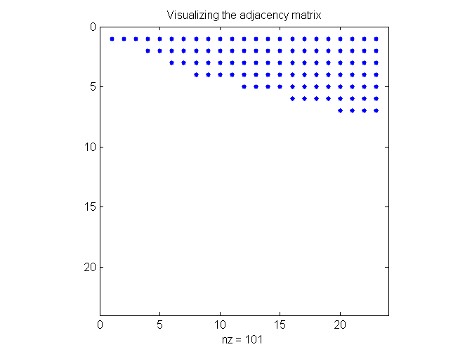 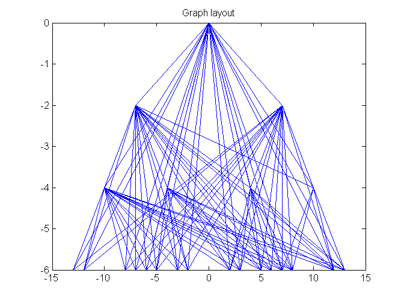 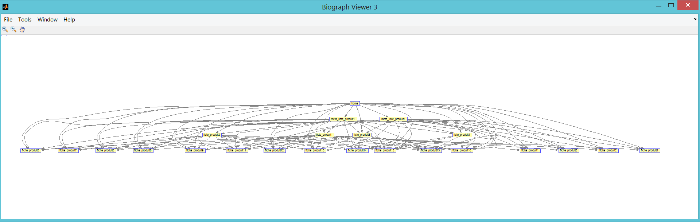
Computing the page rank for the fully arborescent site : home linking every where
pagerankbis(U,G);
page-rank in out url
1 0.3151 22 0 home
2 0.1320 20 1 meta_liste_produit1
3 0.0833 18 1 meta_liste_produit2
4 0.0651 16 2 liste_produit1
5 0.0496 12 2 liste_produit2
6 0.0373 8 3 liste_produit3
7 0.0270 4 3 liste_produit4
8 0.0182 0 4 fiche_produit1
9 0.0182 0 4 fiche_produit2
10 0.0182 0 4 fiche_produit3
11 0.0182 0 4 fiche_produit4
12 0.0182 0 5 fiche_produit5
13 0.0182 0 5 fiche_produit6
14 0.0182 0 5 fiche_produit7
15 0.0182 0 5 fiche_produit8
16 0.0182 0 6 fiche_produit9
17 0.0182 0 6 fiche_produit10
18 0.0182 0 6 fiche_produit11
19 0.0182 0 6 fiche_produit12
20 0.0182 0 7 fiche_produit13
21 0.0182 0 7 fiche_produit14
22 0.0182 0 7 fiche_produit15
23 0.0182 0 7 fiche_produit16
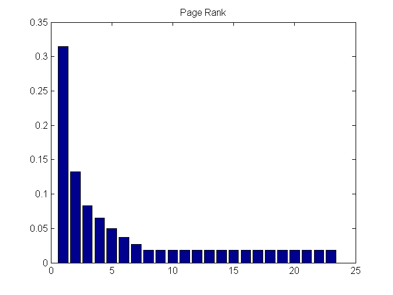
Another configuration : siloing up to the home : link within branch only
G=[...
1 1 1 1 1 1 1 1 1 1 1 1 1 1 1 1 1 1 1 1 1 1 1;...
0 0 0 1 1 0 0 1 1 1 1 1 1 1 1 0 0 0 0 0 0 0 0;...
0 0 0 0 0 1 1 0 0 0 0 0 0 0 0 1 1 1 1 1 1 1 1;...
0 0 0 0 0 0 0 1 1 1 1 1 1 1 1 0 0 0 0 0 0 0 0;...
0 0 0 0 0 0 0 1 1 1 1 1 1 1 1 0 0 0 0 0 0 0 0;...
0 0 0 0 0 0 0 0 0 0 0 0 0 0 0 1 1 1 1 1 1 1 1;...
0 0 0 0 0 0 0 0 0 0 0 0 0 0 0 1 1 1 1 1 1 1 1;...
0 0 0 0 0 0 0 0 0 0 0 0 0 0 0 0 0 0 0 0 0 0 0;...
0 0 0 0 0 0 0 0 0 0 0 0 0 0 0 0 0 0 0 0 0 0 0;...
0 0 0 0 0 0 0 0 0 0 0 0 0 0 0 0 0 0 0 0 0 0 0;...
0 0 0 0 0 0 0 0 0 0 0 0 0 0 0 0 0 0 0 0 0 0 0;...
0 0 0 0 0 0 0 0 0 0 0 0 0 0 0 0 0 0 0 0 0 0 0;...
0 0 0 0 0 0 0 0 0 0 0 0 0 0 0 0 0 0 0 0 0 0 0;...
0 0 0 0 0 0 0 0 0 0 0 0 0 0 0 0 0 0 0 0 0 0 0;...
0 0 0 0 0 0 0 0 0 0 0 0 0 0 0 0 0 0 0 0 0 0 0;...
0 0 0 0 0 0 0 0 0 0 0 0 0 0 0 0 0 0 0 0 0 0 0;...
0 0 0 0 0 0 0 0 0 0 0 0 0 0 0 0 0 0 0 0 0 0 0;...
0 0 0 0 0 0 0 0 0 0 0 0 0 0 0 0 0 0 0 0 0 0 0;...
0 0 0 0 0 0 0 0 0 0 0 0 0 0 0 0 0 0 0 0 0 0 0;...
0 0 0 0 0 0 0 0 0 0 0 0 0 0 0 0 0 0 0 0 0 0 0;...
0 0 0 0 0 0 0 0 0 0 0 0 0 0 0 0 0 0 0 0 0 0 0;...
0 0 0 0 0 0 0 0 0 0 0 0 0 0 0 0 0 0 0 0 0 0 0;...
0 0 0 0 0 0 0 0 0 0 0 0 0 0 0 0 0 0 0 0 0 0 0;...
];
Visualizing the adjacency matrix and the directed graph
figure;
spy(G)
title('Visualizing the adjacency matrix')
figure;
gplot(G,coordinates)
title('Graph layout')
gObj = biograph(G,U);
figure;
gObj = view(gObj);
disp('Number of links inside the site :')
disp(sum(sum(G)))
Number of links inside the site :
75
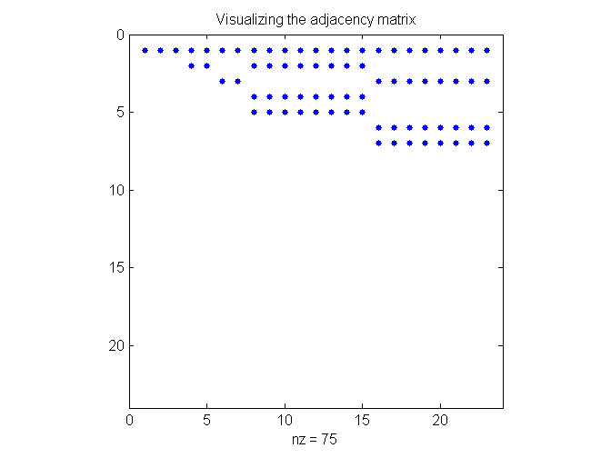 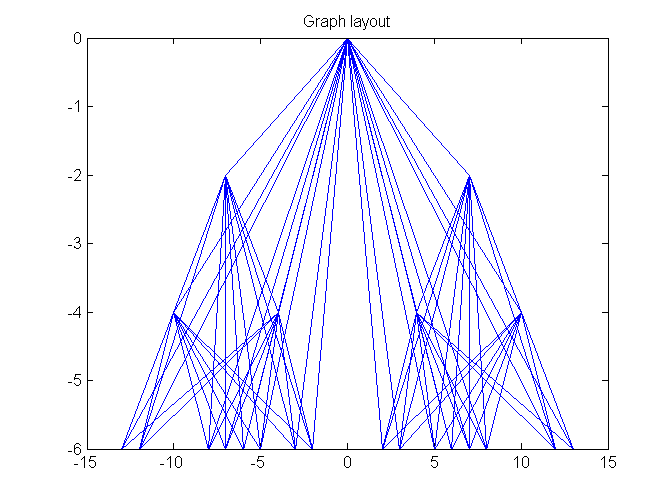 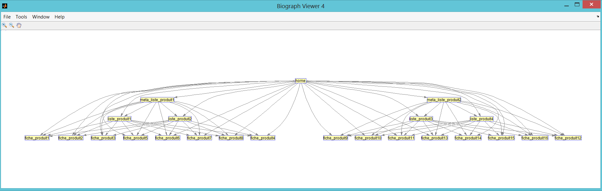
Computing the page rank for the fully arborescent site : home linking every where
pagerankbis(U,G);
page-rank in out url
1 0.3221 22 0 home
2 0.0920 10 1 meta_liste_produit1
3 0.0920 10 1 meta_liste_produit2
4 0.0497 8 2 liste_produit1
5 0.0497 8 2 liste_produit2
6 0.0497 8 2 liste_produit3
7 0.0497 8 2 liste_produit4
8 0.0184 0 4 fiche_produit1
9 0.0184 0 4 fiche_produit2
10 0.0184 0 4 fiche_produit3
11 0.0184 0 4 fiche_produit4
12 0.0184 0 4 fiche_produit5
13 0.0184 0 4 fiche_produit6
14 0.0184 0 4 fiche_produit7
15 0.0184 0 4 fiche_produit8
16 0.0184 0 4 fiche_produit9
17 0.0184 0 4 fiche_produit10
18 0.0184 0 4 fiche_produit11
19 0.0184 0 4 fiche_produit12
20 0.0184 0 4 fiche_produit13
21 0.0184 0 4 fiche_produit14
22 0.0184 0 4 fiche_produit15
23 0.0184 0 4 fiche_produit16
Another configuration : siloing with reciprocating links
G=[...
1 1 1 1 1 1 1 1 1 1 1 1 1 1 1 1 1 1 1 1 1 1 1;...
1 0 0 1 1 0 0 1 1 1 1 1 1 1 1 0 0 0 0 0 0 0 0;...
1 0 0 0 0 1 1 0 0 0 0 0 0 0 0 1 1 1 1 1 1 1 1;...
1 1 0 0 0 0 0 1 1 1 1 1 1 1 1 0 0 0 0 0 0 0 0;...
1 1 0 0 0 0 0 1 1 1 1 1 1 1 1 0 0 0 0 0 0 0 0;...
1 0 1 0 0 0 0 0 0 0 0 0 0 0 0 1 1 1 1 1 1 1 1;...
1 0 1 0 0 0 0 0 0 0 0 0 0 0 0 1 1 1 1 1 1 1 1;...
1 1 0 1 0 0 0 0 0 0 0 0 0 0 0 0 0 0 0 0 0 0 0;...
1 1 0 1 0 0 0 0 0 0 0 0 0 0 0 0 0 0 0 0 0 0 0;...
1 1 0 1 0 0 0 0 0 0 0 0 0 0 0 0 0 0 0 0 0 0 0;...
1 1 0 1 0 0 0 0 0 0 0 0 0 0 0 0 0 0 0 0 0 0 0;...
1 1 0 0 1 0 0 0 0 0 0 0 0 0 0 0 0 0 0 0 0 0 0;...
1 1 0 0 1 0 0 0 0 0 0 0 0 0 0 0 0 0 0 0 0 0 0;...
1 1 0 0 1 0 0 0 0 0 0 0 0 0 0 0 0 0 0 0 0 0 0;...
1 1 0 0 1 0 0 0 0 0 0 0 0 0 0 0 0 0 0 0 0 0 0;...
1 0 1 0 0 1 0 0 0 0 0 0 0 0 0 0 0 0 0 0 0 0 0;...
1 0 1 0 0 1 0 0 0 0 0 0 0 0 0 0 0 0 0 0 0 0 0;...
1 0 1 0 0 1 0 0 0 0 0 0 0 0 0 0 0 0 0 0 0 0 0;...
1 0 1 0 0 1 0 0 0 0 0 0 0 0 0 0 0 0 0 0 0 0 0;...
1 0 1 0 0 0 1 0 0 0 0 0 0 0 0 0 0 0 0 0 0 0 0;...
1 0 1 0 0 0 1 0 0 0 0 0 0 0 0 0 0 0 0 0 0 0 0;...
1 0 1 0 0 0 1 0 0 0 0 0 0 0 0 0 0 0 0 0 0 0 0;...
1 0 1 0 0 0 1 0 0 0 0 0 0 0 0 0 0 0 0 0 0 0 0;...
];
Visualizing the adjacency matrix and the directed graph
figure;
spy(G)
title('Visualizing the adjacency matrix')
figure;
gplot(G,coordinates)
title('Graph layout')
gObj = biograph(G,U);
figure;
gObj = view(gObj);
disp('Number of links inside the site :')
disp(sum(sum(G)))
Number of links inside the site :
133
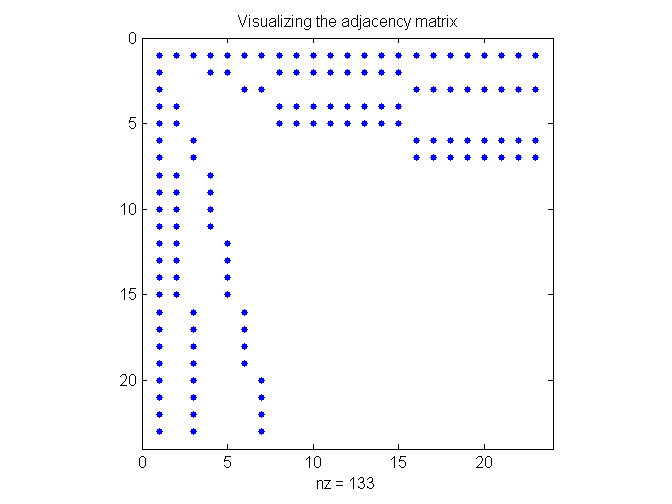 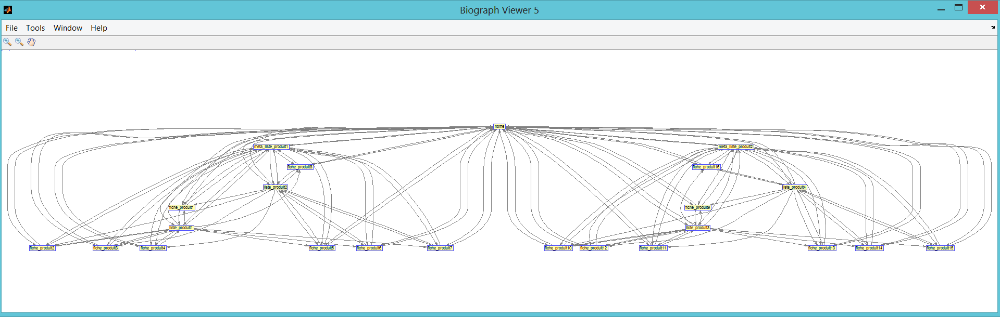
Computing the page rank for the siloing with reciprocating links
pagerankbis(U,G);
page-rank in out url
1 0.1483 22 22 home
2 0.0772 11 11 meta_liste_produit1
3 0.0772 11 11 meta_liste_produit2
4 0.0648 10 6 liste_produit1
5 0.0648 10 6 liste_produit2
7 0.0648 10 6 liste_produit4
6 0.0648 10 6 liste_produit3
8 0.0274 3 4 fiche_produit1
9 0.0274 3 4 fiche_produit2
12 0.0274 3 4 fiche_produit5
14 0.0274 3 4 fiche_produit7
20 0.0274 3 4 fiche_produit13
21 0.0274 3 4 fiche_produit14
10 0.0274 3 4 fiche_produit3
11 0.0274 3 4 fiche_produit4
13 0.0274 3 4 fiche_produit6
15 0.0274 3 4 fiche_produit8
16 0.0274 3 4 fiche_produit9
17 0.0274 3 4 fiche_produit10
22 0.0274 3 4 fiche_produit15
23 0.0274 3 4 fiche_produit16
18 0.0274 3 4 fiche_produit11
19 0.0274 3 4 fiche_produit12
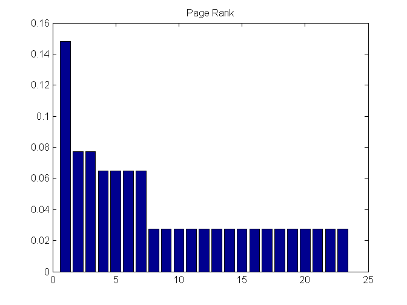
Another configuration : linking every where with reciprocating links
G=[...
1 1 1 1 1 1 1 1 1 1 1 1 1 1 1 1 1 1 1 1 1 1 1;...
1 0 0 1 1 1 1 1 1 1 1 1 1 1 1 1 1 1 1 1 1 1 1;...
1 0 0 0 0 1 1 1 1 1 1 1 1 1 1 1 1 1 1 1 1 1 1;...
1 1 1 0 0 0 0 1 1 1 1 1 1 1 1 1 1 1 1 1 1 1 1;...
1 1 1 0 0 0 0 0 0 0 0 1 1 1 1 1 1 1 1 1 1 1 1;...
1 1 1 0 0 0 0 0 0 0 0 0 0 0 0 1 1 1 1 1 1 1 1;...
1 1 1 0 0 0 0 0 0 0 0 0 0 0 0 0 0 0 0 1 1 1 1;...
1 1 1 1 1 1 1 0 0 0 0 0 0 0 0 0 0 0 0 0 0 0 0;...
1 1 1 1 1 1 1 0 0 0 0 0 0 0 0 0 0 0 0 0 0 0 0;...
1 1 1 1 1 1 1 0 0 0 0 0 0 0 0 0 0 0 0 0 0 0 0;...
1 1 1 1 1 1 1 0 0 0 0 0 0 0 0 0 0 0 0 0 0 0 0;...
1 1 1 1 1 1 1 0 0 0 0 0 0 0 0 0 0 0 0 0 0 0 0;...
1 1 1 1 1 1 1 0 0 0 0 0 0 0 0 0 0 0 0 0 0 0 0;...
1 1 1 1 1 1 1 0 0 0 0 0 0 0 0 0 0 0 0 0 0 0 0;...
1 1 1 1 1 1 1 0 0 0 0 0 0 0 0 0 0 0 0 0 0 0 0;...
1 1 1 1 1 1 1 0 0 0 0 0 0 0 0 0 0 0 0 0 0 0 0;...
1 1 1 1 1 1 1 0 0 0 0 0 0 0 0 0 0 0 0 0 0 0 0;...
1 1 1 1 1 1 1 0 0 0 0 0 0 0 0 0 0 0 0 0 0 0 0;...
1 1 1 1 1 1 1 0 0 0 0 0 0 0 0 0 0 0 0 0 0 0 0;...
1 1 1 1 1 1 1 0 0 0 0 0 0 0 0 0 0 0 0 0 0 0 0;...
1 1 1 1 1 1 1 0 0 0 0 0 0 0 0 0 0 0 0 0 0 0 0;...
1 1 1 1 1 1 1 0 0 0 0 0 0 0 0 0 0 0 0 0 0 0 0;...
1 1 1 1 1 1 1 0 0 0 0 0 0 0 0 0 0 0 0 0 0 0 0;...
];
Visualizing the adjacency matrix and the directed graph
figure;
spy(G)
title('Visualizing the adjacency matrix')
figure;
gplot(G,coordinates)
title('Graph layout')
gObj = biograph(G,U);
figure;
gObj = view(gObj);
disp('Number of links inside the site :')
disp(sum(sum(G)))
Number of links inside the site :
227
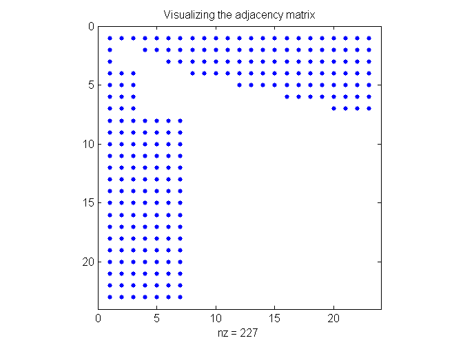 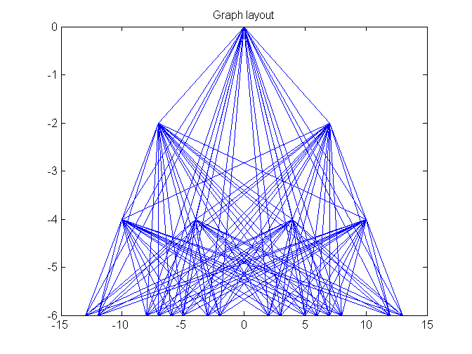 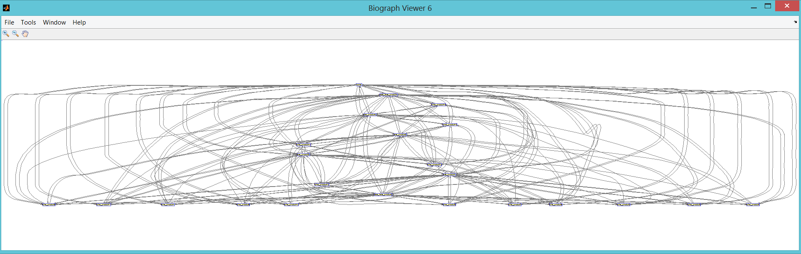
Computing the page rank for the fully arborescent site : home linking every where
pagerankbis(U,G);
page-rank in out url
1 0.1010 22 22 home
2 0.0973 21 21 meta_liste_produit1
4 0.0936 19 18 liste_produit1
3 0.0897 19 21 meta_liste_produit2
5 0.0687 15 18 liste_produit2
6 0.0488 11 19 liste_produit3
7 0.0322 7 19 liste_produit4
8 0.0293 7 4 fiche_produit1
17 0.0293 7 6 fiche_produit10
23 0.0293 7 7 fiche_produit16
11 0.0293 7 4 fiche_produit4
13 0.0293 7 5 fiche_produit6
16 0.0293 7 6 fiche_produit9
18 0.0293 7 6 fiche_produit11
19 0.0293 7 6 fiche_produit12
20 0.0293 7 7 fiche_produit13
21 0.0293 7 7 fiche_produit14
22 0.0293 7 7 fiche_produit15
9 0.0293 7 4 fiche_produit2
12 0.0293 7 5 fiche_produit5
15 0.0293 7 5 fiche_produit8
10 0.0293 7 4 fiche_produit3
14 0.0293 7 5 fiche_produit7
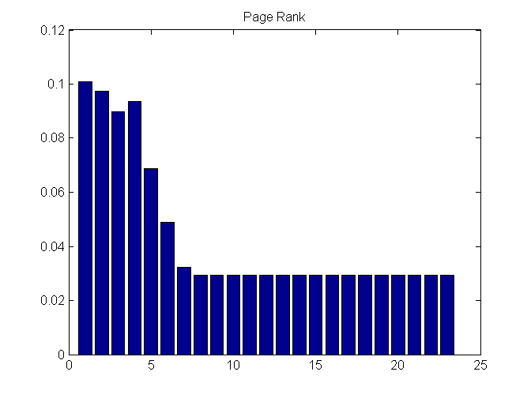